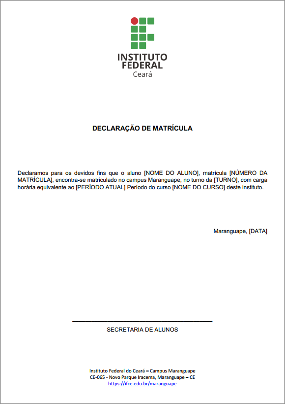
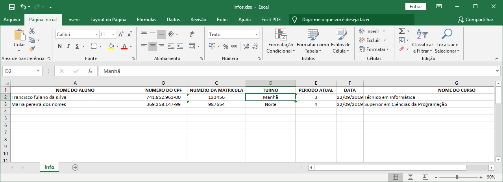

PDF DOC IN PYTHON
The problem
These days I needed to create lots of .PDF (kinda certificates like the picture below) to be sign from my team. I had to generate PDFs from an excel file.
{kind=link}
So I had basic 3 problems:
- Read .XLSX file
- There are some information I have to put in the doc. So I create a XLSX which columns are these information and rows are items that will become a single PDF file.
- Create a .PDF template in python
- The template has basically three things: image header; information footer and a default text in the middle. This text has the information read from XLSX.
- Write the PDF with the information from the XLSX
- Finally, I iterate thru the the XLSX lines reading all the information, filling the text and saving the PDF.
Read .XLSX file
To read a file we must have a file. So I create one with two generic items:
 I use XLRD to read these 7 fields from .XLSX. I just open the file, select the first sheet and started reading from the second line (because the first one is the title in my example above). Then I just iterate the lines.Show me the code!!
# -*- coding: utf-8 -*-
"""
Created on Sun Sep 22 19:29:43 2019
@author: Thomaz Maia
"""
import xlrd
from fpdf import FPDF
class PDF(FPDF):
def header(self):
imgSize = 35
imgPosition = (self.w - imgSize)/2
self.image(name='header.png', x=imgPosition, y=10, w=imgSize)
# Page footer
def footer(self):
# Line
self.set_draw_color(r=100, g=100, b=100)
self.line(x1=30, y1=self.h-22, x2=self.w-30, y2=self.h-22)
# Text
self.set_text_color(100, 100, 100)
self.set_y(self.h-20)
self.set_font('Arial', 'I', 10)
self.cell(w=0, h=5, txt='Instituto Federal do Ceará - Campus Maranguape', border=0, ln=1, align='C')
self.cell(w=0, h=5, txt='CE-065 - Novo Parque Iracema, Maranguape - CE', border=0, ln=1, align='C')
self.set_text_color(0, 0, 255)
self.set_font('Arial', 'u', 10)
self.cell(w=0, h=5, txt='www.ifce.edu.br/maranguape', border=0, ln=0, align='C', fill=False, link='http://www.ifce.edu.br/maranguape')
wb = xlrd.open_workbook("infos.xlsx")
sheet = wb.sheet_by_index(0)
for i in range(1,sheet.nrows,1):
print(sheet.cell_value(i, 0).upper())
pdf = PDF()
pgWidth = pdf.w - 2*pdf.l_margin
pdf.add_page()
pdf.set_font(family='Arial', style='B', size=14)
pdf.set_y(60)
pdf.cell(w=0, h=60, txt="DECLARAÇÃO DE MATRÍCULA", border=0, ln=1, align='C')
pdf.set_font(family='Arial', style='', size=14)
pdf.multi_cell(pgWidth, 6, 'Declaramos para os devidos fins que o aluno ' + sheet.cell_value(i, 0).upper() + ', CPF n° ' + sheet.cell_value(i, 1) + ', matrícula ' + sheet.cell_value(i, 2) + ', encontra-se matriculado no campus Maranguape, no turno da ' + sheet.cell_value(i, 3) + ', com carga horária equivalente ao ' + sheet.cell_value(i, 4) + '° Período do curso ' + sheet.cell_value(i, 6).upper() + ' deste instituto.')
pdf.cell(w=0, h=60, txt='Maranguape, ' + sheet.cell_value(i, 5), border=0, ln=1, align='R')
pdf.set_y(pdf.h-54)
pdf.line(x1=55, y1=pdf.h-57, x2=pdf.w-55, y2=pdf.h-57)
pdf.cell(w=0, h=5, txt='SECRETARIA DE ALUNOS', border=0, ln=1, align='C')
pdf.output(sheet.cell_value(i, 2) + '_' + sheet.cell_value(i, 0).upper() + '.pdf', 'F')